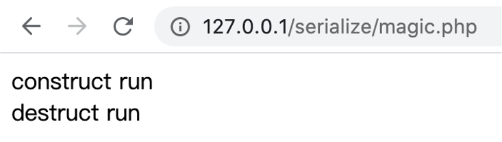
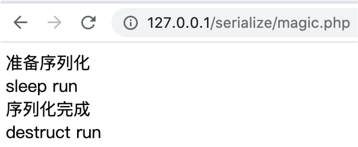
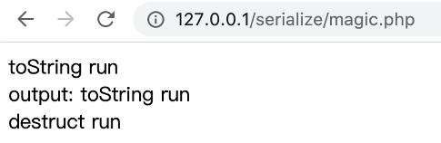
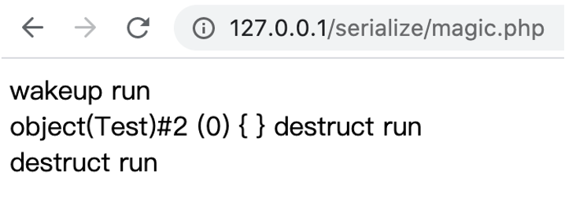
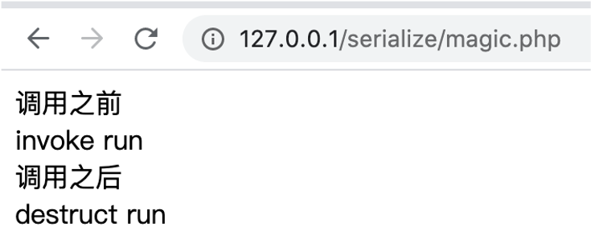
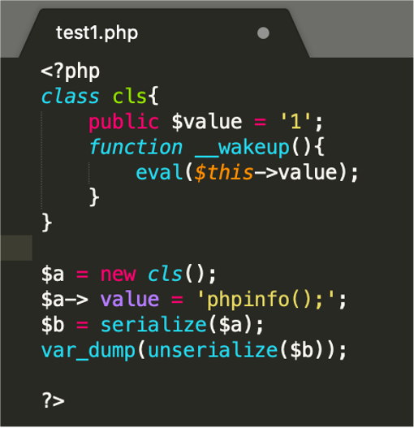
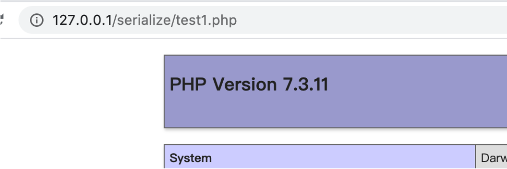
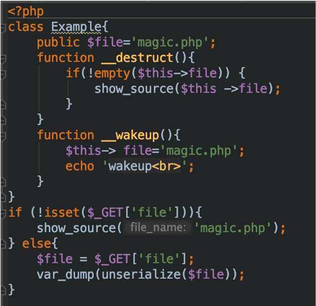

序列化和反序列化
PHP程序为了保存和转储对象，提供了序列化的方法。PHP序列化是为了在程序运行的过程中对对象进行转储产生的。序列化可以将对象转换成字符串，但仅保留对象里的成员变量，不保留函数方法。而反序列化是把字符串恢复为对象的过程。
在PHP中，序列化对应的函数为serialize，反序列化对应的的函数为unserialize。
测试代码
1 |
|
输出
1 | string(100) "O:6:"Person":3:{s:8:"username";s:6:"Glarcy";s:6:"�*�age";i:22;s:16:"�Person�password";s:6:"123456";}" |
其中，O代表对象，:6代表该对象名有6个字符，Person表示该对象的名称，3表示该对象里有3个变量。
序列化会把变量的变量名和值都进行转换，其中，序列化后的字符串以;分割每一个变量的，以}结束。例如s:8:"username";，s表示字符串，8表示该字符串有8个字符。
由于我们这个类的三个成员变量的修饰符都不同，因此其在序列化出来后显示的也不同。
protected属性的表示方式是：%00*%00变量名
private属性的表示方式是：%00类名%00变量名
%00（url编码，hex也就是0x00），表示的是NULL
同时我们可以看到虽然Person类中有welcome这个方法，但是序列化后的字符串中并没有包含这个方法的信息，即序列化不保存方法。
魔术方法
1 | __construct 当一个对象创建时被调用 |
__construct：当一个对象创建时被调用
__destruct：当一个对象销毁时被调用(程序运行完毕，对象自动销毁)
1 | class Test{ |

__sleep：在对象被序列化之前运行
1 | class Test{ |

__toString：当一个对象被当作一个字符串使用
1 | class Test{ |

调用场景
(1) echo ($obj) / print($obj) 打印时会触发
(2) 反序列化对象与字符串连接时
(3) 反序列化对象参与格式化字符串时
(4) 反序列化对象与字符串进行==比较时（PHP进行==比较的时候会转换参数类型）
(5) 反序列化对象参与格式化SQL语句，绑定参数时
(6) 反序列化对象在经过php字符串函数，如 strlen()、addslashes()时
(7) 在in_array()方法中，第一个参数是反序列化对象，第二个参数的数组中有toString返回的字符串的时候toString会被调用
(8) 反序列化的对象作为 class_exists() 的参数的时候
__wakeup：在对象被反序列化之前被调用
1 | class Test{ |

__invoke()：当脚本尝试将对象调用为函数时触发
1 | class Test{ |

反序列化漏洞利用
一般的序列化攻击都在PHP魔术方法中出现可利用的漏洞，因为自动调用触发漏洞，但如果关键代码没在魔术方法中，而是在一个类的普通方法中。这时候就可以通过构造POP链寻找相同的函数名将类的属性和敏感函数的属性联系起来


绕过__wakeup方法
当序列化字符串中表示对象属性个数的值大于真实的属性个数时会跳过__wakeup的执行

先构造序列化正常序列化对象
1 | O:7:"Example":1:{s:4:"file";s:8:"flag.php";} |
修改属性个数
1 | O:7:"Example":2:{s:4:"file";s:8:"flag.php";} |
影响版本：
PHP5 < 5.6.25
PHP7 < 7.0.10
反序列化字符逃逸
原理: 对类中不存在的属性也会进行反序列化。且PHP 在反序列化时，底层代码是以;作为字段的分隔，以}作为结尾(字符串除外)，并且是根据长度判断内容的
假设我们在一个序列化后的字符串后面随意添加点字符
1 | O:6:"Person":3:{s:8:"username";s:6:"Glarcy";s:3:"age";i:22;s:8:"password";s:6:"123456";}123456 |
我们可以看到它还是能顺利反序列化不报错
1 | // var_dump(unserialize($str)); |
利用：构造字符串
https://blog.csdn.net/qq_45521281/article/details/107135706
PHP反序列化字符逃逸分为两种情况：（1）过滤后字符变多（2）过滤后字符变少
session反序列化
利用phar://伪协议解析phar文件触发反序列化